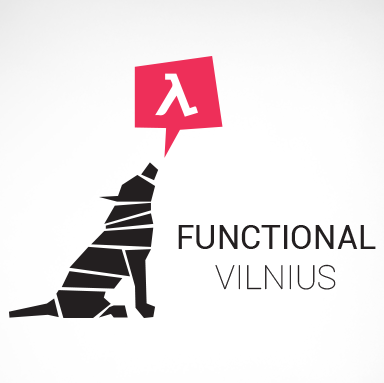

Home
Hi,
This is the website for Functional Vilnius meetups. It still needs some love, so just fork it to contribute.Posts
- Function Vilnius is back from holidays, get ready for meetup #6 - October 3, 2015
- Fourth meetup slides and next meetup announcement - June 10, 2015
- Fourth meetup details - May 23, 2015
- Third meetup slides, survey (!), next meetup announcement - May 5, 2015
- Functional Vilnius #3: Living without Objects and with Free Monads - April 14, 2015
- Announcing our Code of Conduct - April 13, 2015
- Second meetup happened, slides are here, some announcements - March 25, 2015
- Functional Vilnius #𝟚 (+Vilnius JUG!): monads and immutable objects - March 6, 2015
- Slides from the first meetup, call for speakers - March 1, 2015
- First meetup announcement - February 4, 2015
- Functional Vilnius website is live! - January 16, 2015